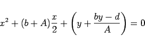

Inhalt Index DeskTop Bronstein

 Arithmetik Algebraische und transzendente Gleichungen Gleichungen 1. bis 4. Grades Gleichungen 4. Grades
Arithmetik Algebraische und transzendente Gleichungen Gleichungen 1. bis 4. Grades Gleichungen 4. Grades


Es genügt, den Fall a = 1 zu betrachten.
Ist
|  | (1.164a) |
überein, wobei und y irgendeine reelle Wurzel der kubischen Gleichung
| 8y3 - 4cy2 +(2bd-8e)y+e(4c-b2)-d2=0 | (1.164b) |
ist.
Ist andererseits